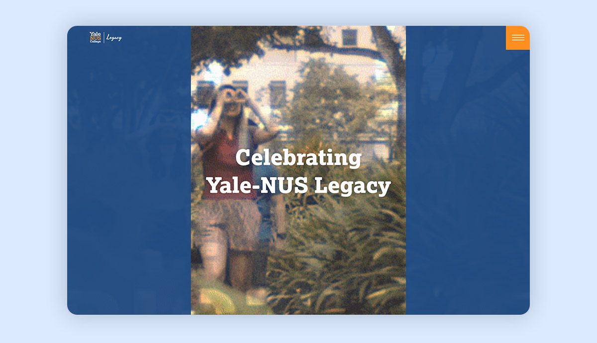
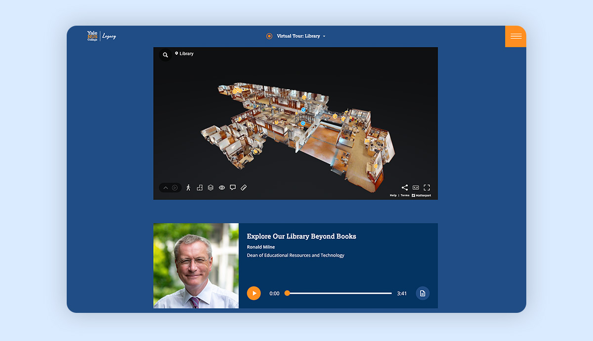
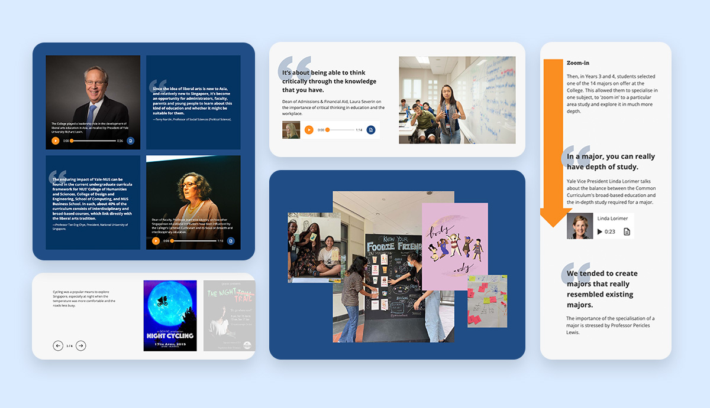
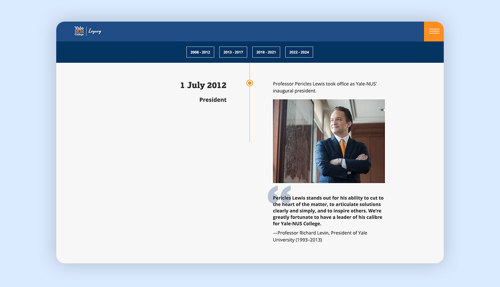

Yale-NUS College Legacy
Introduction
Challenge: The Yale-NUS Legacy website is more than a simple archive. The goal was to transform a vast amount of historical content, including diverse text, images, and audio/video, into an engaging, immersive, and interactive experience that would celebrate the college's unique history and culture.
Decision Making:
- Component System: To handle various content types and a tight deadline, I designed a flexible and scalable component system. This modular approach streamlined development and ensured a cohesive design while efficiently managing different content types.
- From Archive to Experience: To transform a static archive into an engaging experience, I chose a narrative-driven approach. Instead of a simple photo gallery, I designed an immersive virtual campus tour. Similarly, for the college's history, I chose to present key moments through a visual, interactive timeline instead of a flat list.
- Human-Centred Storytelling: The site needed to feel human, so I focused on personal narratives and community stories. This decision allowed me to bring the college's history to life through the voices of students and faculty, helping visitors connect on a more emotional level.
Impact: The site needed to feel human, so I focused on personal narratives and community stories. This decision allowed me to bring the college's history to life through the voices of students and faculty, helping visitors connect on a more emotional level.
Target Audience
Yale-NUS College community:
- Students
- Alumni
- Faculty
- Staff
- General interested public
Process
Data Gathering: online survey, interview, focus group
Establishing Requirements: personas, use cases
Prototyping: low-fi prototype, hi-fi prototype
Evaluation: usability testing, focus group
Colour Palette
Drawing from Yale-NUS College's corporate colours, the palette blends vibrant blues and oranges with complementary neutral tones for a cohesive and dynamic design.
#333333
#FF8E20
#214D85
#033462
The Design
Interactive Campus Tour
I transformed a static gallery into an immersive virtual tour that allows visitors to digitally explore campus spaces and event scenes, providing a rich and interactive look into the college's physical environment.
Storytelling
The website features a dedicated storytelling section where vibrant narratives and personal accounts bring the college's history to life, creating a more engaging and human-centric experience for visitors.
Milestones
To clearly present the college's history, I designed a visual and interactive timeline of key events and achievements, making it simple for users to trace the college's legacy at a glance.
